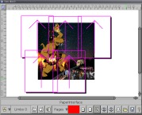
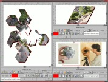
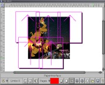
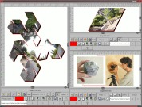
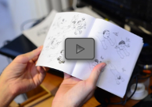
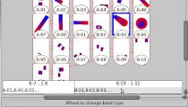

Features
Here is a list of the current features of Laidout (version 0.097). Most of these features can be seen in action on the screenshots page.
You might also be interested in this comparison between various desktop publishing and vector graphics programs, and also the rough Laidout development roadmap.
Impositioning
Impose a document as a collection of single pages, custom folded signature based
impositions (folded right on screen) such as booklets, and nets derived from polyhedra,
possibly based on a dodecahedron, a box, or other polyhedra. Thus, Laidout impositioning is broad
enough to allow impositions with pages that don't have to be rectangular, such as a
triacontahedron.
Also, you can define one or more paper arrangements for any kind of layout from any of the impositions. Each paper arrangement
lets you place the same page, or page spread, or scratch space data across many pieces of paper. This is very useful for postering.
 



Object Types
- Images
- Linear Gradients
- Radial Gradients
- Paths, as of version 0.093. Transparency on screen as of 0.096.
- Color meshes using full cubic tensor product patches, as seen in Postscript and PDF
- Warped images, like color patches, but with image for the color (on a totally unrelated note, you can now do cage warping in the Gimp!)
- Engraver fill, twist around fields of lines by distorting a mesh. Change dash patterns, trace images, and more!
- Captions, a kind of primitive text object. Each caption object is an unlinked, unstreamed block of text with one font, size, and color. It can be aligned left, right, center, or anything in between. I'm working on a more full featured streaming text system.
- Mystery data, which is anything imported from other formats, but not necessarily understood by Laidout. You can reposition this data, and it survives, more or less, when you export to the same kind of file.
- Clones of any of the above.
Objects can be moved, scaled, rotated, and sheared, by themselves or as a group. There is a special 3-point transform, where you can define an anchored center of rotation and scaling, then drag another point to scale and rotate. Or you can anchor 2 points, and drag the third point to shear the object accordingly.
If you have a sufficiently new Linux system (meaning since around 2010, must support Xinput2), you can use two mice at the same time to do fancy multipoint scaling and rotating.

Exporting
You can export everything, or just a range of spreads to a single file or multiple files as is possible for the format. You can also export from the command line, without actually starting up a window. The currently supported export formats are:
- Pdf, cannot export EPS objects
- Svg, cannot export EPS or image warp objects, has trouble with radial gradients where one circle is not inside the other,
- Scribus, images, groups, and any imported Scribus mystery data only
- Png images
- Podofoimpose PLAN, mapping files that podofoimpose can use to impose pdf files
- Passepartout, images and groups only
- Postscript. When printing, or exporting to postscript or eps files, images with transparency will be masked based on 50% threshhold of the alpha channel, since postscript does not have transparency.
- EPS
Importing
When importing, Laidout tries to remember as much as it can from the original file. This allows you to edit a file in Laidout and then export back out to the same format, and the mystery objects will be passed through. For instance, you can import a Scribus document, reimpose it to a booklet, say, then export back to a Scribus format, even though Laidout cannot (yet) handle text blocks, text wrapping, and clip paths.
- EPS, but only as a whole. You cannot import the components of an EPS.
- Images, including many images at the same time, at a specified dpi, and you can say how many you want per page.
- Svg, extremely limited, so limited in fact, that it is not recommended for use of any kind, but you are welcome to help debug!
- Scribus, with a few severe restrictions. Master pages are converted to normal objects. Images must match their frames, unless imported as pure mystery data.
- Passepartout
- OFF, You can import these 3-d polyhedra files to use as the basis for a Net Imposition, but be advised the polyhedron sides should not intersect each other
Interface Windows
A splittable window system, reminiscent of Blender and the Ion window manager. You can dock, float, move and temporarily
maximize the panes of any main split window you have up. The window configuration is also loaded and saved with whatever
document you are working on. The panes of each splittable window can be:
- Page view window, for working on objects within pages
- Spread editor, for rearranging the page order
- Palette Window. You can import Gimp palettes.
- Command prompt window. Run some commands and use it as a basic calculator. Definitely a work in progress.
- Plain text editor. You can edit a group of commands to run with the built in interpreter.
- Help window (very basic at the moment)
One feature of the Page View and Spread Editor windows is that the whole view can be arbitrarily rotated.
Normally, programs only allow viewing a page in portrait or landscape orientation.

Misc
- Simple multiple image import by selecting one or more from a directory
- Import images from a list file
- Page Labels, so you can number like: i, ii, iii, 1, 2, 3, A-1, A-2, etc. Since version .092, there is a gui to edit labels.
- Ability to use preview images as stand-ins for your hundreds of 15M tiffs.
- Batch processing. You can import, reimpose, and export files without opening up a window, by passing commands to Laidout's interpreter from the command line.
- There's a command line option (--file-format) which outputs a sort of mockup of the current file format. Hopefully this will help people make extra utilities, and aid batch processing.
 